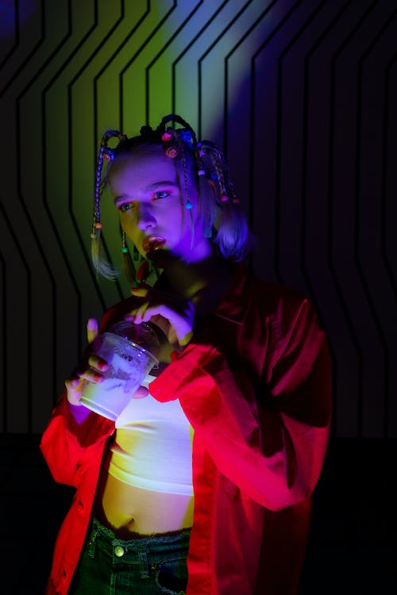
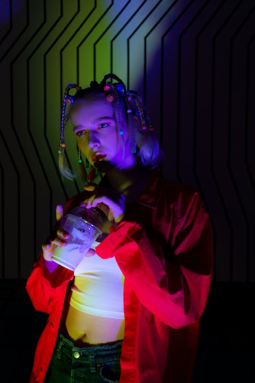

between
Reality
&
Dream
shots that will change your mind
shots that will change your mind
Photography has become a big part of almost every element of our lives.
It become widespread and diverse but we know that this is still a real form of art and magic.
explore works


This series is excellently showing that ordindary portrait photography still can be inspiring for you.
Check the shots of beautiful Caroline in hat with red and green lights.


Beautiful dance of Hanna in neon ligths with retro effect. Pink lights, pretty women and sensuality.
Inspiring vibes and invisible beautiful soul on this shots.


 

Retro nostagia can be sweet and sour at the same time. Christina helped us to make photos, that will give you this feelings.
Drop in past times with this collection of 80's styled photos.